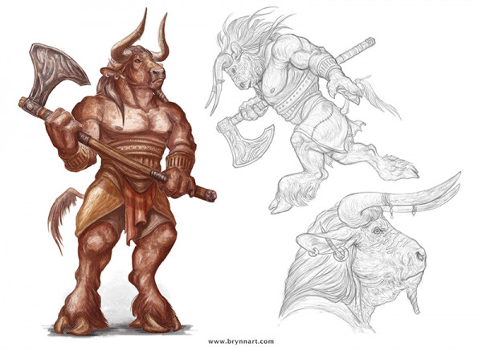
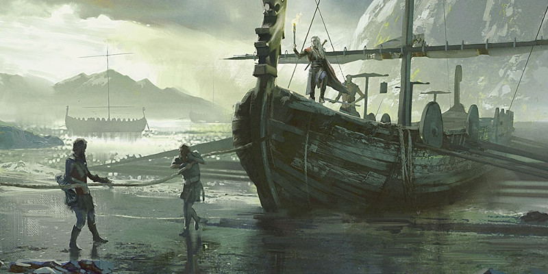

Aventures maritimes
Les nouvelles options de personnages qui suivent présentent une approche de conception simple pour l'aventure sur les mers. Ces règles ont été créées spécifiquement pour des campagnes maritimes à D&D, mais elles sont suffisamment générales pour pouvoir être utiles dans toute campagne. Le Guide du Maître contient des règles pour la gestion des navires en mer, ainsi que les tables de rencontre, des règles pour la météo et d'autres outils utiles. En combinant ces règles avec ces nouvelles options, votre campagne sera prête à mettre les voiles.
Minotaure (v2)
Dans le monde de Krynn, l'univers de la saga Dragonlance, les minotaures vivent dans une société basée sur l'honneur où la force détermine la puissance dans les arènes de gladiateurs comme dans la vie quotidienne. Chez eux sur la terre ferme comme en mer, les minotaures de Krynn sont de féroces combattants des mers qui se classent comme les plus habiles et les plus dangereux marins au monde.
Conquérants arrogants
DES MINOTAURES DANS VOTRE CAMPAGNE
Nous avons choisi les minotaures de Krynn comme modèle pour la représentation de cette race pour une raison très spécifique. Les lier à la mer et à une culture distincte contribue à donner aux minotaures plus de saveur qu'en les présentant seulement comme une autre race de monstres, grande et brutale. Après tout, nous avons déjà les demi-orcs du Manuel des Joueurs et les goliaths de l'Elemental Evil Player’s Companion. De plus, ces minotaures sont de taille M (par opposition à la taille G de la version monstrueuse) et il est ainsi beaucoup plus facile de les équilibrer face aux races du Manuel des Joueurs. Présenter les minotaures comme d'honorables pirates à l'esprit de conquête leur donne ainsi une saveur distincte tout en offrant aux joueurs de nombreuses opportunités.
Lorsque vous ajoutez une nouvelle race à votre propre campagne, c'est toujours une bonne idée de penser à sa culture et à sa relation avec les autres races, et voir comment les deux peuvent se combiner pour lui donner une place unique dans votre monde. Créer une table de liens telle que celle prévue pour les minotaures peut aussi être une bonne manière pour commencer. Faire des minotaures des marins a des implications intéressantes pour un univers. La capacité Mémoire de labyrinthe fait des minotaures de parfaits marins, car ils peuvent parcourir les mers avec peu de crainte de se perdre. Un navigateur minotaure est ainsi un maître de la mer sans égal. Si vous voulez adapter des races à votre campagne, cherchez des points similaires qui pourraient être représentés par des capacités spéciales ou des éléments d'histoire d'une créature qui seraient autrement négligés.
Rappelez-vous aussi que l'histoire que nous fournissons est seulement un point de départ. La modification de ce minotaure pour l'éloigner de ses racines dans Krynn est aussi facile que d'échanger la maîtrise qu'octroie la capacité d'Écumeur des mers pour une autre option qui reflète mieux votre univers. À titre indicatif, considérez d'échanger le maîtrise des outils pour la maîtrise d'une compétence, pour la maîtrise des outils de voleur, ou pour la maîtrise de deux outils autres que les outils de voleur.
Les minotaures partagent l'idée que le faible doit périr et que le fort doit gouverner, et qu'ils sont eux-mêmes la race la plus forte et la plus puissante de Krynn. Ils croient que leur destin est de dominer le monde, et que leur domination se fera par la conquête et la puissance militaire. Pour cela, tous les minotaures sont dès l'enfance formés aux armes, aux armures et à la tactique. Leur arrogance découle d'une combinaison de force, ruse et intellect, trois vertus qui leur sont chères et qu'ils considèrent comme le fondement de leur grandeur. Ils pensent que cette combinaison de traits est ce qui les distingue de leurs rivaux.
La justice par le combat
La société des minotaures est basée sur le principe que la force fait le droit, et que les considérations de justice sont inutiles. Les minotaures sont dirigés par un empereur lui-même servi par un conseil de huit minotaures appelé le Cercle suprême. Tous les postes au sein de ce gouvernement, y compris celui d'empereur, sont gagnés par les minotaures les plus forts et les plus habiles, comme le prouve le combat du Cirque. Le Cirque, qui constitue le seul moyen par lequel un minotaure peut monter dans la société, est un grand déballement de combats en face à face durant lequel les minotaures se battent pour la suprématie. Les jeunes minotaures doivent faire leurs preuves dans le Cirque pour gagner leur passage à l'âge adulte. Participer au Cirque est encore une autre raison pour laquelle les minotaures regardent les autres de haut. Pour eux, la mort et la gloire dans la bataille sont un processus naturel. Le combat est la clé pour faire en sorte que les plus forts survivent, et que les faibles soient mis de côté avant qu'ils ne puissent miner les grands projets de conquête de leurs supérieurs.
L'honneur par dessus tout
De par leur cruauté, les minotaures sont liés entre eux par un puissant sentiment d'honneur. Toute victoire apporte honneur au minotaure et à sa famille. Toute défaite est une tache que seule la mort pourra pleinement effacer. L'honneur exige que les minotaures tiennent leur parole une fois qu'ils l'ont donnée, et tout minotaure restera fidèle à ses amis et à son clan par dessus tout. Les minotaures se lient rarement d'amitié avec des personnes d'autres races, car ils ne les rencontrent souvent que lors d'une bataille. Et si malgré tout cela se produit, cela sera généralement avec des créatures qui partagent les vertus des minotaures et leur amour pour le combat. Pour ces amis, un minotaure sera un allié d'un soutien indéfectible.
Écumeurs des mers
Dans le monde de Krynn, les minotaures gouvernent une chaîne d'îles dominées par les îles de Mithas et de Kothas. Entourés par la mer de tous les côtés, les minotaures ont utilisé leur ténacité, leur force et leur ruse pour devenir parmi les marins les plus qualifiés et les plus féroces du monde. Et ils parcourent les mers sur leurs navires pour attaquer et piller à leur gré. Les minotaures font parfois du commerce, mais ils préfèrent de beaucoup prendre ce qu'ils veulent par la force. Après tout, en tant que peuple le plus fort, ils méritent les trésors et les marchandises que les créatures inférieures ont rassemblés.
Nom de minotaures
Les noms des clans des minotaures proviennent d'un grand héros dont les descendants prennent le nom, faisant de leur mieux pour vivre selon les idéaux de leur ancêtre. Sur Krynn, les noms de clans sont toujours précédés par le préfixe "es-" pour les minotaures des terres contrôlées par l'île de Mithas, ou par "dé-" ceux des zones sous l'emprise de Kothas.
Noms masculins : Beliminorgath, Cinmac, Dastrun, Edder, Galdar, Ganthirogani, Hecariverani, Kyris, Tosher, Zurgas.
Noms féminins : Ayasha, Calina, Fliara, Helati, Keeli, Kyri, Mogara, Sekra, Tariki, Telia.
Noms de clan : Athak, Bregan, Entragath, Kaziganthi, Lagrangli, Mascun, Orilg, Sumarr, Teskos, Zhakan.
Traits
Un personnage minotaure possède un certain nombre de traits qui reflètent la puissance et la supériorité de sa race.
Augmentation de caractéristiques. Votre Force augmente de 2 et votre Constitution augmente de 1.
Alignement. La plupart des minotaures sont d'alignement loyal.
Taille. Les minotaures mesurent en moyenne plus de 1,80 mètre de hauteu, et ont une carrure forte et trapue. Votre taille est Moyenne (M).
Vitesse. Votre vitesse de base est de 9 mètres.
Cornes. Vos cornes sont des armes de corps à corps naturelles que vous maîtrisez automatiquement. Quand vous touchez avec elles, la cible prend des dégâts perforants égaux à 1d6 + votre modificateur de Force.
Ruée. Immédiatement après avoir utilisé l'action Foncer à votre tour et vous être déplacé au minimum de votre vitesse de base, vous pouvez faire une attaque au corps à corps avec vos cornes en tant qu'action bonus.
Revers de cornes. Immédiatement après avoir touché une créature avec une attaque au corps à corps pendant votre tour, vous pouvez tenter de pousser cette créature avec vos cornes en utilisant votre réaction. La créature ne doit pas être plus plus grande que vous d'une taille et doit être située au plus à 1,50 mètre de vous. Elle doit faire un jet de sauvegarde de Force d'un DD égal à 8 + votre bonus de maîtrise + votre modificateur de Force. Si elle échoue, la créature est repoussée de 1,50 mètre.
Menaçant. Vous gagnez la maîtrise de la compétence Intimidation.
Nature hybride. Vous possédez deux types de créature : humanoïde et monstruosité. Vous pouvez être affecté par un effet de jeu s'il fonctionne sur l'un de ces deux types de créature.
Langues. Vous pouvez parler, lire et écrire le commun et le minotaure.
Liens de minotaures
Lorsque vous créez un personnage minotaure enraciné dans Krynn (ou dans toute autre campagne qui se fonde sur l'environnement présenté ici), vous pouvez utiliser la table des liens suivante pour étoffer votre personnage. Utilisez cette table en plus ou à la place des liens de votre historique ou des liens de votre propre création.
| d6 | Lien |
| 1 | Mon adversaire au Cirque pour mon passage à l'âge adulte a été choisi depuis des années. Bien que nous ne nous soyons affrontés qu'une seule fois, j'en suis tombé profondément amoureux. Plutôt que de lutter à mort contre elle/lui, je me suis enfui de chez moi et suis maintenant considéré comme un lâche. |
| 2 | Je suis le dernier de mon clan. Si je meurs sans réaliser de grands exploits, le héros qui est le patron de mon clan sera oublié. |
| 3 | Je faisais partie d'un groupe de voleurs qui a été vaincu et asservi. J'ai pu m'échapper et ai juré de se venger. |
| 4 | Je n'ai jamais partagé l'amour de mon peuple pour la violence. Je fais partie d'un complot qui vise à renverser le régime violent de l'empereur. |
| 5 | Je prétends que je me suis exilé de mon peuple mais, en vérité, je suis un espion. On attend de moi que je passe des messages secrets pour indiquer à mon peuple les villes et villages qui feraient des cibles idéales à conquérir. |
| 6 | Je suis le dernier survivant d'un navire qui a fait naufrage lors d'une tempête. Parfois, les esprits de mes compagnons de bord apparaissent dans mes rêves et me demandent d'effectuer des tâches qu'ils ont laissées inachevées durant leur vie. |
Centaure
Vagabonds de coeur, les centaures aiment les espaces ouverts et la liberté de voyager. Autant qu'ils peuvent, les centaures galopent. Ils courent face au vent et martèlent la terre de leurs sabots en laissant leur queue trainer derrière eux.
Cavalerie de la nature
CENTAURES ET AVENTURES MARITIMES
Le centaure est présenté sur cette page car il a été publié en même temps que la révision du minautore, mais il n'y a pas de lien direct entre cette race et ce thème.
Les centaures ont la partie supérieure du corps d'un humanoïde, arborant les mêmes teintes de peau et morphologies que les humains. Leur taille est comparable à celle d'un humain monté sur un cheval, et il remplissent des rôles similaires - en tant que messagers, cavaliers, éclaireurs ou unité de cavalerie. Les oreilles des centaures sont légèrement pointues mais ils ont des têtes plus larges et plus carrées que les elfes. Sous la taille, ils ont le corps d'un cheval, avec une robe dans les différentes teintes de marron, du brun au châtain, et des queues plus sombres.
Nature et communauté
Les centaures ont un sens aigu de l'interconnectivité du monde naturel, et ils célèbrent la famille et leur communauté comme des microcosmes faisant partie de cette grande connexion. La naissance d'un poulain est toujours prétexte à des festivités. Dans le même temps, les centaures vénèrent les traditions du passé, en préservant les pratiques ancestrales et en gardant vivantes les légendes de leurs héros immémoriaux. Ils se sentent proches des animaux sauvages, peut-être à cause de leur propre nature hybride, et apprécient de galoper aux côtés de troupeaux ou de meutes de bêtes.
Noms centaures
Les prénoms des centaures sont transmis suivant les lignées familliales. Celui qu'on donne à un nouveau poulain est généralement celui du dernier membre de la famille décédé et du même sexe, pour garder vivant le souvenir du défun et, suivant la croyance des centaures, certains fragments de son esprit. Les centaures utilisent rarement les noms de famille, mais portent des symboles qui représentent leur appartenance familiale. Ces symboles peuvent inclure des représentations graphiques de plantes ou d'animaux, des motifs et des emblèmes tatoués, des tresses et autres perles portées dans les cheveux et la queue, ou même des modèles spécifiques tissés dans leurs étoffes.
Traits
Votre personnage centaure possède certaines caractéristiques en commun avec tous les autres centaures.
Augmentation de caractéristiques. Votre Force augmente de 2 et votre Sagesse augmente de 1.
Âge. Les centaures grandissent et vieillissent au même rythme que les humains.
Alignement. Les centaures sont le plus souvent neutres.
Taille. Votre taille est Moyenne (M), même si les centaures sont plus grands que la plupart des humanoïdes.
Vitesse. Votre vitesse de base est de 12 mètres.
Charge. Si vous vous déplacez d'au moins 6 mètres en ligne droite vers une cible, et la touchez avec une attaque au corps à corps avec une arme pendant le même tour, jetez les dés de dommage de votre arme deux fois et additionnez-les. Une fois que vous avez utilisé cette capacité, vous devez terminer un repos court ou long avant de pouvoir l'utiliser à nouveau.
Sabots. Vos sabots sont des armes de corps à corps naturelles que vous maîtrisez automatiquement. Si vous touchez avec vos sabots, la cible prend des dégâts contondants égaux à 1d6 + votre modificateur de Force.
Forme équine. Vous comptez comme une créature une taille plus grande pour déterminer votre capacité de charge et le poids que vous pouvez pousser ou faire glisser. De plus, toute escalade nécessitant des mains et des pieds est particulièrement difficile pour vous à cause de vos sabots. Lors d'une telle ascension, chaque mètre vous coûte 4 mètres de plus au lieu de 2. Enfin, une créature de taille M ou plus petite peut monter sur votre dos équin si vous le permettez. Dans une telle situation, vous continuez à agir de manière indépendante, et non pas comme une monture contrôlée.
Survivant. Vous gagnez la maîtrise de la compétence Survie.
Nature hybride. Vous possédez deux types de créature : humanoïde et monstruosité. Vous pouvez être affecté par un effet de jeu s'il fonctionne sur l'un de ces deux types de créature.
Langues. Vous pouvez parler, lire et écrire le commun et le sylvestre.
NOTES DE CONCEPTION SUR LE MARIN
Dans une campagne basée sur la mer, vous pouvez vous attendre à de nombreux combats dans l'eau et à bord de navires. Les vitesses de nage et d'escalade sont très utiles dans de tels environnements, mais elles peuvent également se révéler importantes dans d'autres domaines. Le bonus de CA du marin est pour sa part soumis à des conditions, mais elles sont en syntonies avec celles que le marin doit respecter pour obtenir une vitesse de nage ou d'escalade.
Style de combat : marin
L'option suivante peut être prise par les guerriers, paladins et rôdeurs pour la capacité Style de combat. Qu'il soit boucanier, navigateur expérimenté ou soldat de la marine spécialement formé, un marin peut conduire un navire et nager dans des eaux agitées avec facilité. Coutumiers des armures légères et intermédiaires, les marins savent se défendre en se passant d'armure lourde ou de boucliers encombrants. La plupart d'entre eux portent de fait des armes à deux mains ou se battent avec deux lames.
Marin
Si vous ne portez pas d'armure lourde et n'utilisez pas de bouclier, votre vitesse de nage et d'escalade est égale à votre vitesse normale, et vous obtenez un bonus de +1 à la CA.
Archétype de roublard : bretteur
Version officielle du Xanathar's Guide to Everything de cette sous-classe publiée initialement dans la rubrique Unearthed Arcana.
Vous concentrez votre formation sur l'art de la lame, en vous reposant sur la vitesse, l'élégance et le charisme à parts égales. Alors que d'autres combattants sont des brutes vêtues d'armure lourde, votre méthode de combat ressemble plus à une représentation. Duellistes et pirates suivent généralement cet archétype. Un bretteur excelle au combat en un contre un, et peut se battre avec deux armes tout en filant comme une flèche loin de l'adversaire.
Jeu de jambes sophistiqué
Lorsque vous choisissez cet archétype au niveau 3, vous apprenez l'art de porter une attaque puis de vous retirer sans incident. Pendant votre tour, si vous faites une attaque au corps à corps contre une créature, cette dernière ne peut pas réaliser d'attaques opportunité contre vous pour le reste de votre tour.
Audace désinvolte
À partir du niveau 3, votre incomparable confiance en vous-même vous propulse dans la bataille. Vous pouvez ajouter votre modificateur de Charisme à vos jets d'initiative.
De plus, vous pouvez utiliser Attaque sournoise sans avoir un avantage au jet d'attaque si aucune autre créature que votre cible se trouve à 1,50 mètre ou moins de vous et que vous n'avez pas un désavantage. Toutes les autres règles de l'Attaque sournoise continuent de s'appliquer.
Panache
BRETTEUR ET COMBAT À DEUX ARMES
Le bretteur repose sur une bonne compréhension des règles de D&D pour réaliser son potentiel, en particulier quand il en vient à se battre avec deux armes.
Les autres personnages doivent utiliser une action bonus pour se désengager s'ils veulent s'échapper d'un corps à corps, alors que la capacité Joli jeu de jambes du bretteur englobe une version limitée de Se désengager au sein de l'attaque. Cela permet d'utiliser une action bonus pour se battre avec deux armes, et ensuite de s'échapper en toute sécurité de l'ennemi attaqué.
Au niveau 9, votre charme est incontournable. Par une action, vous pouvez faire un jet de Charisme (Persuasion) opposé à un jet de Sagesse (Intuition) d'une créature. La créature doit être en mesure de vous entendre et vous devez avoir une langue en commun.
En cas de succès, et si la créature vous est hostile, celle-ci à un désavantage à toutes ses attaques contre d'autres cibles que vous, et ne peut effectuer d'attaques d'opportunité contre d'autres cibles que vous. Cet effet dure 1 minute, jusqu'à ce qu'un de vos alliés attaque la cible ou la cible avec un sort, ou jusqu'à ce que vous vous déplaciez de plus de 18 mètres de la cible. Si vous réussissez l'opposition et que la créature ne vous est pas hostile, celle-ci est alors charmée pendant 1 minute. Tant qu'elle est charmée, la créature vous considère comme une connaissance amicale. L'effet disparaît immédiatement si vous ou l'un de vos alliés faites quelque chose qui lui nuit.
Manœuvre élégante
À partir du niveau 13, vous pouvez utiliser une action bonus à votre tour pour obtenir un avantage à votre prochain jet de Dextérité (Acrobaties) ou Force (Athlétisme) effectué lors du même tour.
Maître duelliste
À partir du niveau 17, votre maîtrise des lames vous permet de transformer un échec en succès lors d'un combat. Si vous ratez une attaque, vous pouvez choisir de lancer de nouveau le jet d'attaque avec un avantage. Une fois que vous avez utilisé cette possibilité, vous ne pouvez plus l'utiliser avant d'avoir terminé un repos court ou long.
Origine magique d'ensorceleur : sorcellerie des tempêtes
Version officielle du Xanathar's Guide to Everything de cette sous-classe publiée initialement dans la rubrique Unearthed Arcana.
Votre magie innée provient de la puissance de l'air élémentaire. Peut-être êtes-vous né lors d'un coup de vent hurlant si puissant que des gens racontent encore des histoires à son sujet, ou votre lignage porte les traces de l'influence de puissantes créatures d'air telles que les vaatis ou les djinns. Quoi qu'il en soit, la magie de la tempête imprègne votre être.
Les ensorceleurs des tempêtes sont d'inestimables membres d'équipage pour un navire. Leur magie permet d'exercer un contrôle sur le vent et la météo dans leur zone. Leurs capacités se révèlent également utiles pour repousser les attaques des sahuagins, des pirates ou autres menaces d'origine maritime.
Parle aux vents
La magie des arcanes que vous contrôlez est imprégnée par l'air élémentaire. Vous pouvez parler, lire et écrire le primordial. Connaitre ce langage vous permet également de comprendre et d'être compris par ceux qui parlent ses dialectes : l'aérien, l'aquatique, l'igné et le terreux.
Magie de tempête
À partir du niveau 1, vous pouvez utiliser une action bonus à votre tour pour faire que des rafales tourbillonnaires d'air élémentaire vous entourent brièvement, immédiatement avant ou après avoir lancé un sort de niveau 1 ou supérieur. Cela vous permet de voler sur 3 mètres sans provoquer d'attaques d'opportunité.
Cœur de tempête
Au niveau 6, vous gagnez la résistance aux dégâts de foudre et de tonnerre. De plus, chaque fois que vous lancez un sort de niveau 1 ou supérieur qui inflige des dégâts de foudre ou de tonnerre, vous dégagez une aura magique orageuse. Cela fait que les créatures de votre choix que vous pouvez voir dans un rayon de 3 mètres autour de vous prennent des dégâts de foudre ou de tonnerre (à choisir à chaque fois que vous activez cette capacité) égaux à la moitié de votre niveau d'ensorceleur.
Guide de tempête
Au niveau 6, vous gagnez la capacité de contrôler subtilement le climat autour de vous. S'il pleut, vous pouvez utiliser une action pour faire cesser la pluie dans un rayon de 6 mètres centré sur vous. Vous pouvez mettre fin à cet effet par une action bonus.
S'il y a du vent, vous pouvez utiliser une action bonus à chaque round pour choisir la direction dans laquelle le vent souffle dans un rayon de 30 mètres autour de vous. Le vent souffle alors dans cette direction jusqu'à la fin de votre prochain tour. Cette capacité ne permet pas de modifier la vitesse du vent.
Fureur de la tempête
À partir du niveau 14, si vous êtes touché par une attaque au corps à corps, vous pouvez utiliser votre réaction pour infliger à l'attaquant des dégâts de foudre égaux à votre niveau d'ensorceleur. L'attaquant doit également faire un jet de sauvegarde de Force contre le DD de sauvegarde de vos sorts. En cas d'échec, l'attaquant est repoussé de vous en ligne droite sur 6 mètres.
Âme du vent
Au niveau 18, vous gagnez l'immunité aux dégâts de foudre et de tonnerre.
Vous obtenez également une vitesse de vol de 18 mètres. Par une action, vous pouvez réduire votre vitesse de vol à 9 mètres pendant une heure et choisir dans un rayon de 9 mètres autour de vous un nombre de créatures égal à 3 + votre modificateur de Charisme. Les créatures choisies obtiennent une vitesse de vol de 9 mètres pendant 1 heure. Une fois que vous avez réduit votre vitesse de vol de cette manière, vous ne pouvez plus le faire jusqu'à ce que vous ayez terminé un repos court ou long.

Traduit par blueace et kevetoile